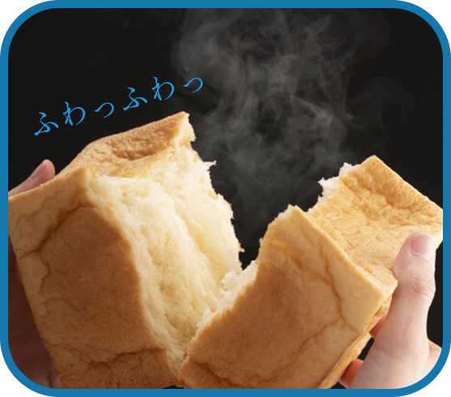
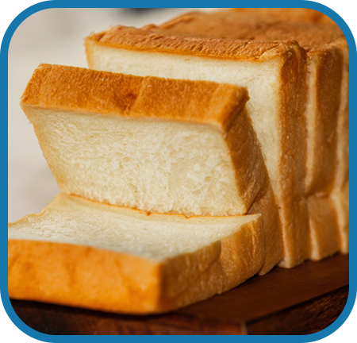
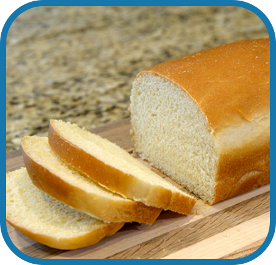
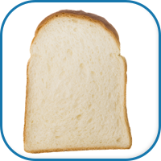
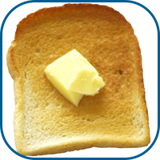
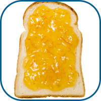
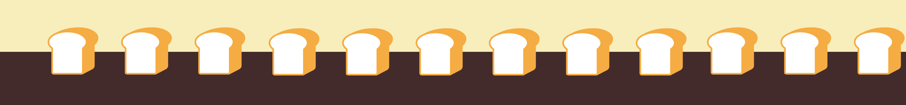

厳選された100%国内産の小麦、国産バターなど
材料１つ１つにこだわった豊かな風味で贅沢な食パンです。
ほんのりした甘味が口いっぱいに広がります。
- 新型コロナウィルスの対策及び、営業時間変更について
- 冬の新商品を公開しました。

「パニー」の食パンは、生クリームや蜂蜜を使わずほんのり甘く口当たりがやわらかいのが特徴です。
水分は100%ミルクのみ。小麦も国産にこだわりました。
皆さまにいつでも焼きたてをお楽しみいただけるよう、想いを込めて毎日工房にて手作りしております。
当店自慢のふわふわな食パンの美味しさを、ぜひ堪能してください。


トーストしても、そのまま食べてもおいしい生食パンです。
もっちり＆しっとりした食感で耳まで柔らかくいただけます。
香り・味・食感すべてバランスよく揃った一品です。
-

まずは何もつけずにそのまま。焼きたてならではの芳醇な香りと繊細な食感を楽しんでみてください。
-

冷めてしまった食パンでも、トーストしていただくことでサクサクとした触感がまた味わえます。
お好みでバターをのせてもGOOD！ -

イチゴやみかんなど、ほどよい酸味のあるフルーツとの相性はバツグンです。生フルーツやチョコレートをのせてアレンジするのもいかが？
食パン専門店 Panny -パニー-
住所：
〒000-0000 東京都千代田区〇の内〇丁目〇−〇
電話：
090-0000-0000
定休日：
木曜日
営業時間
10:00~18:30
